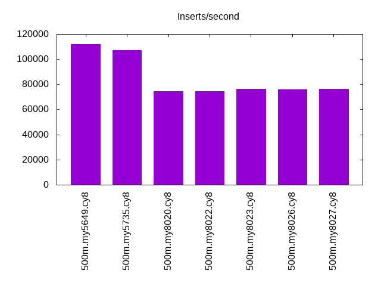
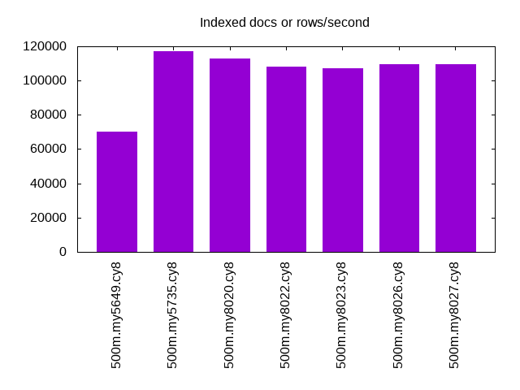
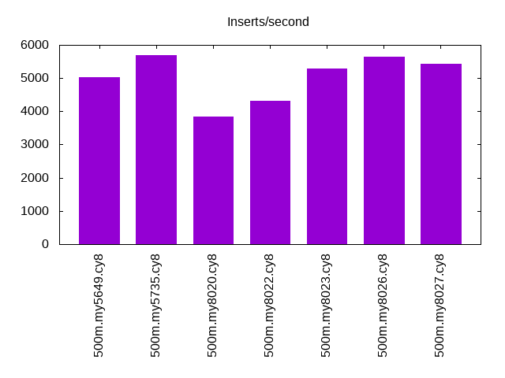
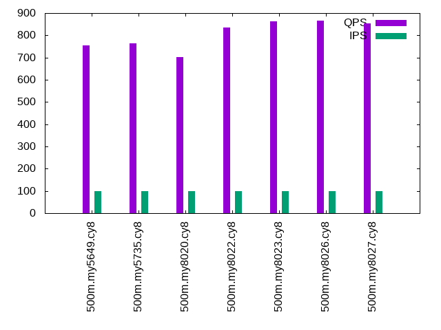
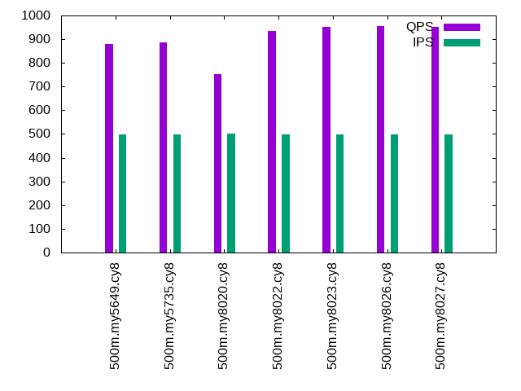
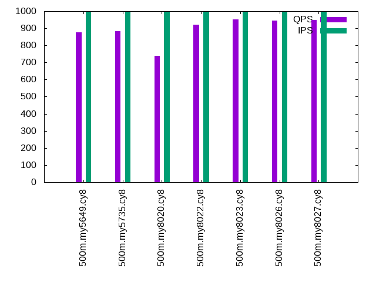

This is a report for the insert benchmark with 500M docs and 1 client(s). It is generated by scripts (bash, awk, sed) and Tufte might not be impressed. An overview of the insert benchmark is here and a short update is here. Below, by DBMS, I mean DBMS+version.config. An example is my8020.c10b40 where my means MySQL, 8020 is version 8.0.20 and c10b40 is the name for the configuration file.
The test server is an Intel NUC with 4 cores, 16G RAM and a Samsung 970 EVO. More details are here. Clients and the DBMS share one server. The per-database configs are in the per-database subdirectories here.
The tested DBMS are:
The numbers are inserts/s for l.i0 and l.i1, indexed docs (or rows) /s for l.x and queries/s for q*.2. The values are the average rate over the entire test for inserts (IPS) and queries (QPS). The range of values for IPS and QPS is split into 3 parts: bottom 25%, middle 50%, top 25%. Values in the bottom 25% have a red background, values in the top 25% have a green background and values in the middle have no color. A gray background is used for values that can be ignored because the DBMS did not sustain the target insert rate. Red backgrounds are not used when the minimum value is within 80% of the max value.
| dbms | l.i0 | l.x | l.i1 | q100.1 | q500.1 | q1000.1 |
|---|---|---|---|---|---|---|
| 500m.my5649.cy8 | 112108 | 70091 | 5023 | 754 | 881 | 878 |
| 500m.my5735.cy8 | 107411 | 117037 | 5701 | 763 | 885 | 884 |
| 500m.my8020.cy8 | 74660 | 113068 | 3834 | 702 | 753 | 739 |
| 500m.my8022.cy8 | 74694 | 108340 | 4310 | 836 | 936 | 922 |
| 500m.my8023.cy8 | 76359 | 107088 | 5277 | 863 | 953 | 952 |
| 500m.my8026.cy8 | 75792 | 109551 | 5643 | 866 | 955 | 946 |
| 500m.my8027.cy8 | 76546 | 109695 | 5423 | 854 | 951 | 950 |
This lists the average rate of inserts/s for the tests that do inserts concurrent with queries. For such tests the query rate is listed in the table above. The read+write tests are setup so that the insert rate should match the target rate every second. Cells that are not at least 95% of the target have a red background to indicate a failure to satisfy the target.
| dbms | q100.1 | q500.1 | q1000.1 |
|---|---|---|---|
| my5649.cy8 | 100 | 499 | 999 |
| my5735.cy8 | 100 | 499 | 999 |
| my8020.cy8 | 100 | 500 | 999 |
| my8022.cy8 | 100 | 499 | 999 |
| my8023.cy8 | 100 | 499 | 999 |
| my8026.cy8 | 100 | 499 | 999 |
| my8027.cy8 | 100 | 499 | 999 |
| target | 100 | 500 | 1000 |
l.i0: load without secondary indexes. Graphs for performance per 1-second interval are here.
Average throughput:
Insert response time histogram: each cell has the percentage of responses that take <= the time in the header and max is the max response time in seconds. For the max column values in the top 25% of the range have a red background and in the bottom 25% of the range have a green background. The red background is not used when the min value is within 80% of the max value.
| dbms | 256us | 1ms | 4ms | 16ms | 64ms | 256ms | 1s | 4s | 16s | gt | max |
|---|---|---|---|---|---|---|---|---|---|---|---|
| my5649.cy8 | 96.865 | 2.750 | 0.300 | 0.082 | 0.001 | 0.003 | 0.361 | ||||
| my5735.cy8 | 98.390 | 1.347 | 0.257 | 0.002 | 0.004 | 0.117 | |||||
| my8020.cy8 | 99.566 | 0.400 | 0.034 | nonzero | 0.082 | ||||||
| my8022.cy8 | 99.714 | 0.208 | 0.078 | nonzero | 0.078 | ||||||
| my8023.cy8 | 99.721 | 0.203 | 0.076 | nonzero | 0.121 | ||||||
| my8026.cy8 | 99.696 | 0.272 | 0.032 | nonzero | 0.109 | ||||||
| my8027.cy8 | 99.699 | 0.270 | 0.031 | nonzero | 0.112 |
Performance metrics for the DBMS listed above. Some are normalized by throughput, others are not. Legend for results is here.
ips qps rps rmbps wps wmbps rpq rkbpq wpi wkbpi csps cpups cspq cpupq dbgb1 dbgb2 rss maxop p50 p99 tag 112108 0 981 3.8 445.0 37.5 0.009 0.035 0.004 0.342 14147 44.8 0.126 16 32.9 73.4 10.7 0.361 112977 77537 500m.my5649.cy8 107411 0 0 0.0 457.1 36.6 0.000 0.000 0.004 0.349 11999 45.3 0.112 17 32.9 73.5 11.0 0.117 107483 95694 500m.my5735.cy8 74660 0 0 0.0 395.1 26.7 0.000 0.000 0.005 0.366 19060 39.7 0.255 21 32.8 73.3 11.1 0.082 74654 70222 500m.my8020.cy8 74694 0 0 0.0 397.7 26.7 0.000 0.000 0.005 0.366 8379 39.6 0.112 21 32.8 73.3 11.2 0.078 74717 70422 500m.my8022.cy8 76359 0 0 0.0 404.5 27.3 0.000 0.000 0.005 0.366 8732 40.5 0.114 21 32.8 73.3 11.1 0.121 76217 71719 500m.my8023.cy8 75792 0 0 0.0 398.0 27.1 0.000 0.000 0.005 0.366 8666 40.4 0.114 21 32.8 73.3 11.1 0.109 75648 71343 500m.my8026.cy8 76546 0 0 0.0 400.3 27.3 0.000 0.000 0.005 0.366 8895 40.6 0.116 21 32.8 73.3 11.1 0.112 76346 72220 500m.my8027.cy8
l.x: create secondary indexes.
Average throughput:
Performance metrics for the DBMS listed above. Some are normalized by throughput, others are not. Legend for results is here.
ips qps rps rmbps wps wmbps rpq rkbpq wpi wkbpi csps cpups cspq cpupq dbgb1 dbgb2 rss maxop p50 p99 tag 70091 0 425 63.1 739.3 85.0 0.006 0.922 0.011 1.241 2479 18.6 0.035 11 67.8 108.3 10.8 0.025 NA NA 500m.my5649.cy8 117037 0 679 101.0 1184.8 128.9 0.006 0.884 0.010 1.127 7045 22.9 0.060 8 73.6 114.2 11.1 0.013 NA NA 500m.my5735.cy8 113068 0 627 98.8 1228.8 124.2 0.006 0.895 0.011 1.125 7356 22.9 0.065 8 73.3 113.8 11.3 0.013 NA NA 500m.my8020.cy8 108340 0 636 94.3 1185.3 119.2 0.006 0.891 0.011 1.127 6114 22.7 0.056 8 73.3 113.8 11.3 0.025 NA NA 500m.my8022.cy8 107088 0 637 93.3 1186.3 117.9 0.006 0.893 0.011 1.127 6630 22.8 0.062 9 73.3 113.9 11.2 0.020 NA NA 500m.my8023.cy8 109551 0 654 95.4 1204.6 120.2 0.006 0.892 0.011 1.123 6739 23.2 0.062 8 73.3 113.9 11.2 0.013 NA NA 500m.my8026.cy8 109695 0 1631 143.7 2252.7 142.7 0.015 1.341 0.021 1.332 14790 67.6 0.135 25 73.3 113.9 11.2 0.016 NA NA 500m.my8027.cy8
l.i1: continue load after secondary indexes created. Graphs for performance per 1-second interval are here.
Average throughput:
Insert response time histogram: each cell has the percentage of responses that take <= the time in the header and max is the max response time in seconds. For the max column values in the top 25% of the range have a red background and in the bottom 25% of the range have a green background. The red background is not used when the min value is within 80% of the max value.
| dbms | 256us | 1ms | 4ms | 16ms | 64ms | 256ms | 1s | 4s | 16s | gt | max |
|---|---|---|---|---|---|---|---|---|---|---|---|
| my5649.cy8 | 71.762 | 14.226 | 11.828 | 1.761 | 0.422 | 0.571 | |||||
| my5735.cy8 | 67.054 | 22.146 | 9.653 | 0.864 | 0.283 | 0.643 | |||||
| my8020.cy8 | 60.388 | 23.460 | 11.995 | 3.774 | 0.383 | 0.667 | |||||
| my8022.cy8 | 62.238 | 23.598 | 10.797 | 3.101 | 0.265 | 0.615 | |||||
| my8023.cy8 | 61.922 | 26.968 | 9.741 | 1.121 | 0.248 | 0.751 | |||||
| my8026.cy8 | 61.715 | 27.402 | 9.945 | 0.694 | 0.246 | 0.809 | |||||
| my8027.cy8 | 69.830 | 19.443 | 9.639 | 0.656 | 0.432 | 0.734 |
Performance metrics for the DBMS listed above. Some are normalized by throughput, others are not. Legend for results is here.
ips qps rps rmbps wps wmbps rpq rkbpq wpi wkbpi csps cpups cspq cpupq dbgb1 dbgb2 rss maxop p50 p99 tag 5023 0 2612 39.8 3595.2 131.4 0.520 8.109 0.716 26.800 14370 19.1 2.861 152 101.8 144.2 10.8 0.571 1348 499 500m.my5649.cy8 5701 0 2863 44.7 3984.6 143.4 0.502 8.034 0.699 25.748 17765 25.5 3.116 179 101.8 144.4 11.1 0.643 2397 150 500m.my5735.cy8 3834 0 1943 30.4 3404.0 99.3 0.507 8.108 0.888 26.524 22399 27.3 5.842 285 101.4 143.9 11.3 0.667 1099 100 500m.my8020.cy8 4310 0 2173 33.9 3838.2 112.0 0.504 8.065 0.890 26.613 18530 22.3 4.299 207 101.4 143.8 11.3 0.615 1350 100 500m.my8022.cy8 5277 0 2653 41.5 4650.5 135.9 0.503 8.045 0.881 26.379 20002 24.5 3.790 186 101.4 143.9 11.2 0.751 2347 100 500m.my8023.cy8 5643 0 2842 44.4 4937.5 144.6 0.504 8.057 0.875 26.234 21039 25.7 3.728 182 101.4 143.9 11.3 0.809 2747 100 500m.my8026.cy8 5423 0 2745 42.9 4690.0 137.5 0.506 8.099 0.865 25.972 20106 24.3 3.708 179 101.4 143.9 11.2 0.734 2098 100 500m.my8027.cy8
q100.1: range queries with 100 insert/s per client. Graphs for performance per 1-second interval are here.
Average throughput:
Query response time histogram: each cell has the percentage of responses that take <= the time in the header and max is the max response time in seconds. For max values in the top 25% of the range have a red background and in the bottom 25% of the range have a green background. The red background is not used when the min value is within 80% of the max value.
| dbms | 256us | 1ms | 4ms | 16ms | 64ms | 256ms | 1s | 4s | 16s | gt | max |
|---|---|---|---|---|---|---|---|---|---|---|---|
| my5649.cy8 | 3.981 | 56.679 | 38.770 | 0.471 | 0.097 | 0.002 | 0.091 | ||||
| my5735.cy8 | 6.414 | 51.881 | 41.157 | 0.443 | 0.105 | 0.001 | 0.105 | ||||
| my8020.cy8 | 3.511 | 45.525 | 50.278 | 0.589 | 0.097 | nonzero | 0.096 | ||||
| my8022.cy8 | 8.791 | 47.752 | 42.991 | 0.379 | 0.086 | nonzero | 0.112 | ||||
| my8023.cy8 | 8.538 | 49.522 | 41.458 | 0.386 | 0.096 | nonzero | 0.088 | ||||
| my8026.cy8 | 7.901 | 50.468 | 41.166 | 0.371 | 0.094 | 0.001 | 0.112 | ||||
| my8027.cy8 | 7.996 | 49.300 | 42.214 | 0.400 | 0.090 | nonzero | 0.118 |
Insert response time histogram: each cell has the percentage of responses that take <= the time in the header and max is the max response time in seconds. For max values in the top 25% of the range have a red background and in the bottom 25% of the range have a green background. The red background is not used when the min value is within 80% of the max value.
| dbms | 256us | 1ms | 4ms | 16ms | 64ms | 256ms | 1s | 4s | 16s | gt | max |
|---|---|---|---|---|---|---|---|---|---|---|---|
| my5649.cy8 | 0.257 | 42.333 | 56.528 | 0.882 | 0.111 | ||||||
| my5735.cy8 | 0.354 | 52.493 | 47.104 | 0.049 | 0.094 | ||||||
| my8020.cy8 | 0.076 | 43.188 | 56.736 | 0.064 | |||||||
| my8022.cy8 | 0.368 | 56.785 | 42.847 | 0.061 | |||||||
| my8023.cy8 | 0.361 | 63.458 | 36.076 | 0.104 | 0.097 | ||||||
| my8026.cy8 | 0.264 | 65.014 | 34.632 | 0.090 | 0.078 | ||||||
| my8027.cy8 | 0.375 | 74.007 | 25.611 | 0.007 | 0.074 |
Performance metrics for the DBMS listed above. Some are normalized by throughput, others are not. Legend for results is here.
ips qps rps rmbps wps wmbps rpq rkbpq wpi wkbpi csps cpups cspq cpupq dbgb1 dbgb2 rss maxop p50 p99 tag 100 754 2941 45.9 393.3 12.0 3.901 62.376 3.941 123.357 9493 17.5 12.592 929 101.8 144.3 10.8 0.091 735 464 500m.my5649.cy8 100 763 2976 46.5 404.2 12.3 3.900 62.401 4.050 126.385 9843 18.2 12.897 954 101.8 144.4 11.1 0.105 751 543 500m.my5735.cy8 100 702 2744 42.9 471.3 11.8 3.909 62.537 4.718 120.715 11759 23.7 16.751 1350 101.5 143.9 11.3 0.096 687 480 500m.my8020.cy8 100 836 3248 50.7 510.7 12.8 3.882 62.119 5.118 131.032 10617 17.6 12.692 842 101.5 143.9 11.3 0.112 815 591 500m.my8022.cy8 100 863 3345 52.3 531.2 13.1 3.876 62.014 5.323 134.699 11225 17.5 13.006 811 101.5 144.0 11.3 0.088 847 607 500m.my8023.cy8 100 866 3362 52.5 535.0 13.2 3.880 62.085 5.361 135.669 11283 17.4 13.024 803 101.5 144.0 11.3 0.112 847 623 500m.my8026.cy8 100 854 3315 51.8 511.3 12.6 3.882 62.108 5.123 129.595 11086 17.4 12.979 815 101.5 144.0 11.2 0.118 831 591 500m.my8027.cy8
q500.1: range queries with 500 insert/s per client. Graphs for performance per 1-second interval are here.
Average throughput:
Query response time histogram: each cell has the percentage of responses that take <= the time in the header and max is the max response time in seconds. For max values in the top 25% of the range have a red background and in the bottom 25% of the range have a green background. The red background is not used when the min value is within 80% of the max value.
| dbms | 256us | 1ms | 4ms | 16ms | 64ms | 256ms | 1s | 4s | 16s | gt | max |
|---|---|---|---|---|---|---|---|---|---|---|---|
| my5649.cy8 | 9.104 | 50.423 | 40.093 | 0.289 | 0.091 | 0.046 | |||||
| my5735.cy8 | 16.537 | 41.557 | 41.545 | 0.260 | 0.101 | 0.046 | |||||
| my8020.cy8 | 8.145 | 40.338 | 51.131 | 0.272 | 0.114 | 0.041 | |||||
| my8022.cy8 | 17.780 | 38.609 | 43.280 | 0.238 | 0.093 | 0.054 | |||||
| my8023.cy8 | 15.651 | 41.619 | 42.363 | 0.273 | 0.095 | 0.044 | |||||
| my8026.cy8 | 14.441 | 43.019 | 42.183 | 0.260 | 0.097 | 0.044 | |||||
| my8027.cy8 | 14.610 | 42.812 | 42.224 | 0.257 | 0.097 | 0.050 |
Insert response time histogram: each cell has the percentage of responses that take <= the time in the header and max is the max response time in seconds. For max values in the top 25% of the range have a red background and in the bottom 25% of the range have a green background. The red background is not used when the min value is within 80% of the max value.
| dbms | 256us | 1ms | 4ms | 16ms | 64ms | 256ms | 1s | 4s | 16s | gt | max |
|---|---|---|---|---|---|---|---|---|---|---|---|
| my5649.cy8 | 54.825 | 40.603 | 4.572 | 0.064 | |||||||
| my5735.cy8 | 57.632 | 41.926 | 0.442 | 0.053 | |||||||
| my8020.cy8 | 22.271 | 76.921 | 0.807 | 0.001 | 0.068 | ||||||
| my8022.cy8 | 43.019 | 56.354 | 0.625 | 0.001 | 0.070 | ||||||
| my8023.cy8 | 41.839 | 57.510 | 0.650 | 0.001 | 0.066 | ||||||
| my8026.cy8 | 38.638 | 60.731 | 0.631 | 0.001 | 0.067 | ||||||
| my8027.cy8 | 46.972 | 52.515 | 0.513 | 0.057 |
Performance metrics for the DBMS listed above. Some are normalized by throughput, others are not. Legend for results is here.
ips qps rps rmbps wps wmbps rpq rkbpq wpi wkbpi csps cpups cspq cpupq dbgb1 dbgb2 rss maxop p50 p99 tag 499 881 3423 53.4 404.9 12.6 3.887 62.063 0.811 25.916 11059 16.7 12.557 758 102.1 144.5 10.8 0.046 863 671 500m.my5649.cy8 499 885 3432 53.6 406.1 12.6 3.878 62.042 0.813 25.837 11299 17.5 12.767 791 102.1 144.7 11.1 0.046 863 639 500m.my5735.cy8 500 753 2931 45.8 461.6 11.8 3.893 62.287 0.924 24.094 13307 24.1 17.672 1280 101.7 144.1 11.3 0.041 735 607 500m.my8020.cy8 499 936 3630 56.7 513.8 13.1 3.876 62.016 1.029 26.777 11719 17.3 12.513 739 101.7 144.1 11.3 0.054 927 656 500m.my8022.cy8 499 953 3696 57.7 530.7 13.3 3.878 62.055 1.063 27.323 12284 17.3 12.891 726 101.7 144.2 11.3 0.044 943 687 500m.my8023.cy8 499 955 3705 57.9 536.0 13.5 3.881 62.089 1.073 27.587 12327 17.3 12.912 725 101.7 144.2 11.3 0.044 943 687 500m.my8026.cy8 499 951 3682 57.5 524.6 13.2 3.872 61.946 1.051 27.027 12233 17.3 12.863 728 101.7 144.2 11.2 0.050 928 687 500m.my8027.cy8
q1000.1: range queries with 1000 insert/s per client. Graphs for performance per 1-second interval are here.
Average throughput:
Query response time histogram: each cell has the percentage of responses that take <= the time in the header and max is the max response time in seconds. For max values in the top 25% of the range have a red background and in the bottom 25% of the range have a green background. The red background is not used when the min value is within 80% of the max value.
| dbms | 256us | 1ms | 4ms | 16ms | 64ms | 256ms | 1s | 4s | 16s | gt | max |
|---|---|---|---|---|---|---|---|---|---|---|---|
| my5649.cy8 | 10.695 | 46.290 | 42.572 | 0.303 | 0.140 | nonzero | 0.233 | ||||
| my5735.cy8 | 19.955 | 36.039 | 43.544 | 0.324 | 0.138 | nonzero | 0.077 | ||||
| my8020.cy8 | 10.071 | 36.134 | 53.192 | 0.446 | 0.157 | nonzero | 0.085 | ||||
| my8022.cy8 | 19.295 | 35.171 | 45.107 | 0.307 | 0.120 | nonzero | 0.078 | ||||
| my8023.cy8 | 18.239 | 37.215 | 44.132 | 0.295 | 0.118 | nonzero | 0.096 | ||||
| my8026.cy8 | 16.835 | 38.434 | 44.304 | 0.301 | 0.126 | nonzero | 0.090 | ||||
| my8027.cy8 | 17.076 | 38.409 | 44.084 | 0.309 | 0.122 | nonzero | 0.082 |
Insert response time histogram: each cell has the percentage of responses that take <= the time in the header and max is the max response time in seconds. For max values in the top 25% of the range have a red background and in the bottom 25% of the range have a green background. The red background is not used when the min value is within 80% of the max value.
| dbms | 256us | 1ms | 4ms | 16ms | 64ms | 256ms | 1s | 4s | 16s | gt | max |
|---|---|---|---|---|---|---|---|---|---|---|---|
| my5649.cy8 | 60.691 | 33.989 | 5.315 | 0.006 | 0.170 | ||||||
| my5735.cy8 | 66.779 | 32.381 | 0.836 | 0.003 | 0.151 | ||||||
| my8020.cy8 | 45.181 | 53.933 | 0.881 | 0.005 | 0.181 | ||||||
| my8022.cy8 | 51.873 | 47.352 | 0.770 | 0.005 | 0.182 | ||||||
| my8023.cy8 | 55.902 | 43.398 | 0.696 | 0.004 | 0.170 | ||||||
| my8026.cy8 | 47.568 | 51.480 | 0.945 | 0.007 | 0.159 | ||||||
| my8027.cy8 | 63.088 | 36.320 | 0.588 | 0.003 | 0.170 |
Performance metrics for the DBMS listed above. Some are normalized by throughput, others are not. Legend for results is here.
ips qps rps rmbps wps wmbps rpq rkbpq wpi wkbpi csps cpups cspq cpupq dbgb1 dbgb2 rss maxop p50 p99 tag 999 878 3658 56.9 679.1 21.4 4.165 66.389 0.680 21.886 12273 17.5 13.972 797 102.5 145.3 10.8 0.233 863 655 500m.my5649.cy8 999 884 3646 57.0 677.6 21.2 4.122 65.953 0.678 21.686 12464 18.3 14.092 828 102.5 145.4 11.1 0.077 864 639 500m.my5735.cy8 999 739 3065 47.9 764.2 19.6 4.148 66.369 0.765 20.091 14496 25.1 19.616 1359 102.2 144.9 11.3 0.085 720 591 500m.my8020.cy8 999 922 3842 60.0 875.3 22.5 4.165 66.635 0.876 23.019 12812 18.2 13.889 789 102.2 145.0 11.3 0.078 911 656 500m.my8022.cy8 999 952 3909 61.1 848.5 21.6 4.108 65.731 0.850 22.175 13519 18.3 14.207 769 102.2 144.9 11.3 0.096 943 703 500m.my8023.cy8 999 946 3941 61.6 892.0 22.7 4.166 66.657 0.893 23.304 13654 18.4 14.433 778 102.2 145.1 11.3 0.090 943 687 500m.my8026.cy8 999 950 3891 60.8 839.0 21.4 4.096 65.538 0.840 21.949 13473 18.2 14.183 766 102.2 144.9 11.2 0.082 943 688 500m.my8027.cy8
l.i0: load without secondary indexes
Performance metrics for all DBMS, not just the ones listed above. Some are normalized by throughput, others are not. Legend for results is here.
ips qps rps rmbps wps wmbps rpq rkbpq wpi wkbpi csps cpups cspq cpupq dbgb1 dbgb2 rss maxop p50 p99 tag 112108 0 981 3.8 445.0 37.5 0.009 0.035 0.004 0.342 14147 44.8 0.126 16 32.9 73.4 10.7 0.361 112977 77537 500m.my5649.cy8 107411 0 0 0.0 457.1 36.6 0.000 0.000 0.004 0.349 11999 45.3 0.112 17 32.9 73.5 11.0 0.117 107483 95694 500m.my5735.cy8 74660 0 0 0.0 395.1 26.7 0.000 0.000 0.005 0.366 19060 39.7 0.255 21 32.8 73.3 11.1 0.082 74654 70222 500m.my8020.cy8 74694 0 0 0.0 397.7 26.7 0.000 0.000 0.005 0.366 8379 39.6 0.112 21 32.8 73.3 11.2 0.078 74717 70422 500m.my8022.cy8 76359 0 0 0.0 404.5 27.3 0.000 0.000 0.005 0.366 8732 40.5 0.114 21 32.8 73.3 11.1 0.121 76217 71719 500m.my8023.cy8 75792 0 0 0.0 398.0 27.1 0.000 0.000 0.005 0.366 8666 40.4 0.114 21 32.8 73.3 11.1 0.109 75648 71343 500m.my8026.cy8 76546 0 0 0.0 400.3 27.3 0.000 0.000 0.005 0.366 8895 40.6 0.116 21 32.8 73.3 11.1 0.112 76346 72220 500m.my8027.cy8
l.x: create secondary indexes
Performance metrics for all DBMS, not just the ones listed above. Some are normalized by throughput, others are not. Legend for results is here.
ips qps rps rmbps wps wmbps rpq rkbpq wpi wkbpi csps cpups cspq cpupq dbgb1 dbgb2 rss maxop p50 p99 tag 70091 0 425 63.1 739.3 85.0 0.006 0.922 0.011 1.241 2479 18.6 0.035 11 67.8 108.3 10.8 0.025 NA NA 500m.my5649.cy8 117037 0 679 101.0 1184.8 128.9 0.006 0.884 0.010 1.127 7045 22.9 0.060 8 73.6 114.2 11.1 0.013 NA NA 500m.my5735.cy8 113068 0 627 98.8 1228.8 124.2 0.006 0.895 0.011 1.125 7356 22.9 0.065 8 73.3 113.8 11.3 0.013 NA NA 500m.my8020.cy8 108340 0 636 94.3 1185.3 119.2 0.006 0.891 0.011 1.127 6114 22.7 0.056 8 73.3 113.8 11.3 0.025 NA NA 500m.my8022.cy8 107088 0 637 93.3 1186.3 117.9 0.006 0.893 0.011 1.127 6630 22.8 0.062 9 73.3 113.9 11.2 0.020 NA NA 500m.my8023.cy8 109551 0 654 95.4 1204.6 120.2 0.006 0.892 0.011 1.123 6739 23.2 0.062 8 73.3 113.9 11.2 0.013 NA NA 500m.my8026.cy8 109695 0 1631 143.7 2252.7 142.7 0.015 1.341 0.021 1.332 14790 67.6 0.135 25 73.3 113.9 11.2 0.016 NA NA 500m.my8027.cy8
l.i1: continue load after secondary indexes created
Performance metrics for all DBMS, not just the ones listed above. Some are normalized by throughput, others are not. Legend for results is here.
ips qps rps rmbps wps wmbps rpq rkbpq wpi wkbpi csps cpups cspq cpupq dbgb1 dbgb2 rss maxop p50 p99 tag 5023 0 2612 39.8 3595.2 131.4 0.520 8.109 0.716 26.800 14370 19.1 2.861 152 101.8 144.2 10.8 0.571 1348 499 500m.my5649.cy8 5701 0 2863 44.7 3984.6 143.4 0.502 8.034 0.699 25.748 17765 25.5 3.116 179 101.8 144.4 11.1 0.643 2397 150 500m.my5735.cy8 3834 0 1943 30.4 3404.0 99.3 0.507 8.108 0.888 26.524 22399 27.3 5.842 285 101.4 143.9 11.3 0.667 1099 100 500m.my8020.cy8 4310 0 2173 33.9 3838.2 112.0 0.504 8.065 0.890 26.613 18530 22.3 4.299 207 101.4 143.8 11.3 0.615 1350 100 500m.my8022.cy8 5277 0 2653 41.5 4650.5 135.9 0.503 8.045 0.881 26.379 20002 24.5 3.790 186 101.4 143.9 11.2 0.751 2347 100 500m.my8023.cy8 5643 0 2842 44.4 4937.5 144.6 0.504 8.057 0.875 26.234 21039 25.7 3.728 182 101.4 143.9 11.3 0.809 2747 100 500m.my8026.cy8 5423 0 2745 42.9 4690.0 137.5 0.506 8.099 0.865 25.972 20106 24.3 3.708 179 101.4 143.9 11.2 0.734 2098 100 500m.my8027.cy8
q100.1: range queries with 100 insert/s per client
Performance metrics for all DBMS, not just the ones listed above. Some are normalized by throughput, others are not. Legend for results is here.
ips qps rps rmbps wps wmbps rpq rkbpq wpi wkbpi csps cpups cspq cpupq dbgb1 dbgb2 rss maxop p50 p99 tag 100 754 2941 45.9 393.3 12.0 3.901 62.376 3.941 123.357 9493 17.5 12.592 929 101.8 144.3 10.8 0.091 735 464 500m.my5649.cy8 100 763 2976 46.5 404.2 12.3 3.900 62.401 4.050 126.385 9843 18.2 12.897 954 101.8 144.4 11.1 0.105 751 543 500m.my5735.cy8 100 702 2744 42.9 471.3 11.8 3.909 62.537 4.718 120.715 11759 23.7 16.751 1350 101.5 143.9 11.3 0.096 687 480 500m.my8020.cy8 100 836 3248 50.7 510.7 12.8 3.882 62.119 5.118 131.032 10617 17.6 12.692 842 101.5 143.9 11.3 0.112 815 591 500m.my8022.cy8 100 863 3345 52.3 531.2 13.1 3.876 62.014 5.323 134.699 11225 17.5 13.006 811 101.5 144.0 11.3 0.088 847 607 500m.my8023.cy8 100 866 3362 52.5 535.0 13.2 3.880 62.085 5.361 135.669 11283 17.4 13.024 803 101.5 144.0 11.3 0.112 847 623 500m.my8026.cy8 100 854 3315 51.8 511.3 12.6 3.882 62.108 5.123 129.595 11086 17.4 12.979 815 101.5 144.0 11.2 0.118 831 591 500m.my8027.cy8
q500.1: range queries with 500 insert/s per client
Performance metrics for all DBMS, not just the ones listed above. Some are normalized by throughput, others are not. Legend for results is here.
ips qps rps rmbps wps wmbps rpq rkbpq wpi wkbpi csps cpups cspq cpupq dbgb1 dbgb2 rss maxop p50 p99 tag 499 881 3423 53.4 404.9 12.6 3.887 62.063 0.811 25.916 11059 16.7 12.557 758 102.1 144.5 10.8 0.046 863 671 500m.my5649.cy8 499 885 3432 53.6 406.1 12.6 3.878 62.042 0.813 25.837 11299 17.5 12.767 791 102.1 144.7 11.1 0.046 863 639 500m.my5735.cy8 500 753 2931 45.8 461.6 11.8 3.893 62.287 0.924 24.094 13307 24.1 17.672 1280 101.7 144.1 11.3 0.041 735 607 500m.my8020.cy8 499 936 3630 56.7 513.8 13.1 3.876 62.016 1.029 26.777 11719 17.3 12.513 739 101.7 144.1 11.3 0.054 927 656 500m.my8022.cy8 499 953 3696 57.7 530.7 13.3 3.878 62.055 1.063 27.323 12284 17.3 12.891 726 101.7 144.2 11.3 0.044 943 687 500m.my8023.cy8 499 955 3705 57.9 536.0 13.5 3.881 62.089 1.073 27.587 12327 17.3 12.912 725 101.7 144.2 11.3 0.044 943 687 500m.my8026.cy8 499 951 3682 57.5 524.6 13.2 3.872 61.946 1.051 27.027 12233 17.3 12.863 728 101.7 144.2 11.2 0.050 928 687 500m.my8027.cy8
q1000.1: range queries with 1000 insert/s per client
Performance metrics for all DBMS, not just the ones listed above. Some are normalized by throughput, others are not. Legend for results is here.
ips qps rps rmbps wps wmbps rpq rkbpq wpi wkbpi csps cpups cspq cpupq dbgb1 dbgb2 rss maxop p50 p99 tag 999 878 3658 56.9 679.1 21.4 4.165 66.389 0.680 21.886 12273 17.5 13.972 797 102.5 145.3 10.8 0.233 863 655 500m.my5649.cy8 999 884 3646 57.0 677.6 21.2 4.122 65.953 0.678 21.686 12464 18.3 14.092 828 102.5 145.4 11.1 0.077 864 639 500m.my5735.cy8 999 739 3065 47.9 764.2 19.6 4.148 66.369 0.765 20.091 14496 25.1 19.616 1359 102.2 144.9 11.3 0.085 720 591 500m.my8020.cy8 999 922 3842 60.0 875.3 22.5 4.165 66.635 0.876 23.019 12812 18.2 13.889 789 102.2 145.0 11.3 0.078 911 656 500m.my8022.cy8 999 952 3909 61.1 848.5 21.6 4.108 65.731 0.850 22.175 13519 18.3 14.207 769 102.2 144.9 11.3 0.096 943 703 500m.my8023.cy8 999 946 3941 61.6 892.0 22.7 4.166 66.657 0.893 23.304 13654 18.4 14.433 778 102.2 145.1 11.3 0.090 943 687 500m.my8026.cy8 999 950 3891 60.8 839.0 21.4 4.096 65.538 0.840 21.949 13473 18.2 14.183 766 102.2 144.9 11.2 0.082 943 688 500m.my8027.cy8
Insert response time histogram
256us 1ms 4ms 16ms 64ms 256ms 1s 4s 16s gt max tag 0.000 96.865 2.750 0.300 0.082 0.001 0.003 0.000 0.000 0.000 0.361 my5649.cy8 0.000 98.390 1.347 0.257 0.002 0.004 0.000 0.000 0.000 0.000 0.117 my5735.cy8 0.000 0.000 99.566 0.400 0.034 nonzero 0.000 0.000 0.000 0.000 0.082 my8020.cy8 0.000 0.000 99.714 0.208 0.078 nonzero 0.000 0.000 0.000 0.000 0.078 my8022.cy8 0.000 0.000 99.721 0.203 0.076 nonzero 0.000 0.000 0.000 0.000 0.121 my8023.cy8 0.000 0.000 99.696 0.272 0.032 nonzero 0.000 0.000 0.000 0.000 0.109 my8026.cy8 0.000 0.000 99.699 0.270 0.031 nonzero 0.000 0.000 0.000 0.000 0.112 my8027.cy8
TODO - determine whether there is data for create index response time
Insert response time histogram
256us 1ms 4ms 16ms 64ms 256ms 1s 4s 16s gt max tag 0.000 0.000 71.762 14.226 11.828 1.761 0.422 0.000 0.000 0.000 0.571 my5649.cy8 0.000 0.000 67.054 22.146 9.653 0.864 0.283 0.000 0.000 0.000 0.643 my5735.cy8 0.000 0.000 60.388 23.460 11.995 3.774 0.383 0.000 0.000 0.000 0.667 my8020.cy8 0.000 0.000 62.238 23.598 10.797 3.101 0.265 0.000 0.000 0.000 0.615 my8022.cy8 0.000 0.000 61.922 26.968 9.741 1.121 0.248 0.000 0.000 0.000 0.751 my8023.cy8 0.000 0.000 61.715 27.402 9.945 0.694 0.246 0.000 0.000 0.000 0.809 my8026.cy8 0.000 0.000 69.830 19.443 9.639 0.656 0.432 0.000 0.000 0.000 0.734 my8027.cy8
Query response time histogram
256us 1ms 4ms 16ms 64ms 256ms 1s 4s 16s gt max tag 3.981 56.679 38.770 0.471 0.097 0.002 0.000 0.000 0.000 0.000 0.091 my5649.cy8 6.414 51.881 41.157 0.443 0.105 0.001 0.000 0.000 0.000 0.000 0.105 my5735.cy8 3.511 45.525 50.278 0.589 0.097 nonzero 0.000 0.000 0.000 0.000 0.096 my8020.cy8 8.791 47.752 42.991 0.379 0.086 nonzero 0.000 0.000 0.000 0.000 0.112 my8022.cy8 8.538 49.522 41.458 0.386 0.096 nonzero 0.000 0.000 0.000 0.000 0.088 my8023.cy8 7.901 50.468 41.166 0.371 0.094 0.001 0.000 0.000 0.000 0.000 0.112 my8026.cy8 7.996 49.300 42.214 0.400 0.090 nonzero 0.000 0.000 0.000 0.000 0.118 my8027.cy8
Insert response time histogram
256us 1ms 4ms 16ms 64ms 256ms 1s 4s 16s gt max tag 0.000 0.000 0.257 42.333 56.528 0.882 0.000 0.000 0.000 0.000 0.111 my5649.cy8 0.000 0.000 0.354 52.493 47.104 0.049 0.000 0.000 0.000 0.000 0.094 my5735.cy8 0.000 0.000 0.076 43.188 56.736 0.000 0.000 0.000 0.000 0.000 0.064 my8020.cy8 0.000 0.000 0.368 56.785 42.847 0.000 0.000 0.000 0.000 0.000 0.061 my8022.cy8 0.000 0.000 0.361 63.458 36.076 0.104 0.000 0.000 0.000 0.000 0.097 my8023.cy8 0.000 0.000 0.264 65.014 34.632 0.090 0.000 0.000 0.000 0.000 0.078 my8026.cy8 0.000 0.000 0.375 74.007 25.611 0.007 0.000 0.000 0.000 0.000 0.074 my8027.cy8
Query response time histogram
256us 1ms 4ms 16ms 64ms 256ms 1s 4s 16s gt max tag 9.104 50.423 40.093 0.289 0.091 0.000 0.000 0.000 0.000 0.000 0.046 my5649.cy8 16.537 41.557 41.545 0.260 0.101 0.000 0.000 0.000 0.000 0.000 0.046 my5735.cy8 8.145 40.338 51.131 0.272 0.114 0.000 0.000 0.000 0.000 0.000 0.041 my8020.cy8 17.780 38.609 43.280 0.238 0.093 0.000 0.000 0.000 0.000 0.000 0.054 my8022.cy8 15.651 41.619 42.363 0.273 0.095 0.000 0.000 0.000 0.000 0.000 0.044 my8023.cy8 14.441 43.019 42.183 0.260 0.097 0.000 0.000 0.000 0.000 0.000 0.044 my8026.cy8 14.610 42.812 42.224 0.257 0.097 0.000 0.000 0.000 0.000 0.000 0.050 my8027.cy8
Insert response time histogram
256us 1ms 4ms 16ms 64ms 256ms 1s 4s 16s gt max tag 0.000 0.000 54.825 40.603 4.572 0.000 0.000 0.000 0.000 0.000 0.064 my5649.cy8 0.000 0.000 57.632 41.926 0.442 0.000 0.000 0.000 0.000 0.000 0.053 my5735.cy8 0.000 0.000 22.271 76.921 0.807 0.001 0.000 0.000 0.000 0.000 0.068 my8020.cy8 0.000 0.000 43.019 56.354 0.625 0.001 0.000 0.000 0.000 0.000 0.070 my8022.cy8 0.000 0.000 41.839 57.510 0.650 0.001 0.000 0.000 0.000 0.000 0.066 my8023.cy8 0.000 0.000 38.638 60.731 0.631 0.001 0.000 0.000 0.000 0.000 0.067 my8026.cy8 0.000 0.000 46.972 52.515 0.513 0.000 0.000 0.000 0.000 0.000 0.057 my8027.cy8
Query response time histogram
256us 1ms 4ms 16ms 64ms 256ms 1s 4s 16s gt max tag 10.695 46.290 42.572 0.303 0.140 nonzero 0.000 0.000 0.000 0.000 0.233 my5649.cy8 19.955 36.039 43.544 0.324 0.138 nonzero 0.000 0.000 0.000 0.000 0.077 my5735.cy8 10.071 36.134 53.192 0.446 0.157 nonzero 0.000 0.000 0.000 0.000 0.085 my8020.cy8 19.295 35.171 45.107 0.307 0.120 nonzero 0.000 0.000 0.000 0.000 0.078 my8022.cy8 18.239 37.215 44.132 0.295 0.118 nonzero 0.000 0.000 0.000 0.000 0.096 my8023.cy8 16.835 38.434 44.304 0.301 0.126 nonzero 0.000 0.000 0.000 0.000 0.090 my8026.cy8 17.076 38.409 44.084 0.309 0.122 nonzero 0.000 0.000 0.000 0.000 0.082 my8027.cy8
Insert response time histogram
256us 1ms 4ms 16ms 64ms 256ms 1s 4s 16s gt max tag 0.000 0.000 60.691 33.989 5.315 0.006 0.000 0.000 0.000 0.000 0.170 my5649.cy8 0.000 0.000 66.779 32.381 0.836 0.003 0.000 0.000 0.000 0.000 0.151 my5735.cy8 0.000 0.000 45.181 53.933 0.881 0.005 0.000 0.000 0.000 0.000 0.181 my8020.cy8 0.000 0.000 51.873 47.352 0.770 0.005 0.000 0.000 0.000 0.000 0.182 my8022.cy8 0.000 0.000 55.902 43.398 0.696 0.004 0.000 0.000 0.000 0.000 0.170 my8023.cy8 0.000 0.000 47.568 51.480 0.945 0.007 0.000 0.000 0.000 0.000 0.159 my8026.cy8 0.000 0.000 63.088 36.320 0.588 0.003 0.000 0.000 0.000 0.000 0.170 my8027.cy8